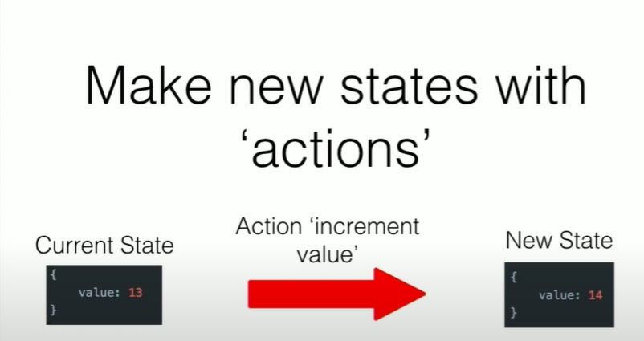

Redux is an open source JavaScript library for managing application
state.
The library was created in 2015 by Daniel Abramov and Andrew Clark.
The first version Abramov created in preparation for the React
Europe conference. According to Abramov, he tried to create an
implementation of the Flux idea with a different logic.
Redux can be described in three fundamental principles:
Single source of truth.
State is read-only
Changes are made with pure functions
Main selling points:
Redux helps you write applications,run in different environments
and are easy to test.
Redux is compatible with many other frameworks like React, Angular
and even pure JavaScript.
The entire state of an application is stored in one central
location.
The Redux DevTools make it easy to trace your application's state
changed.
Redux works with any UI layer, and has a large ecosystem of addons
to fit your needs.
What is a state?
The data that defines the condition of a system
To-do list items, user auth information, Facebook posts etc...

Examples
actions.js
Examples
reducer.js
Examples
index.js
The component responds to what happens in other components(pattern
observer)